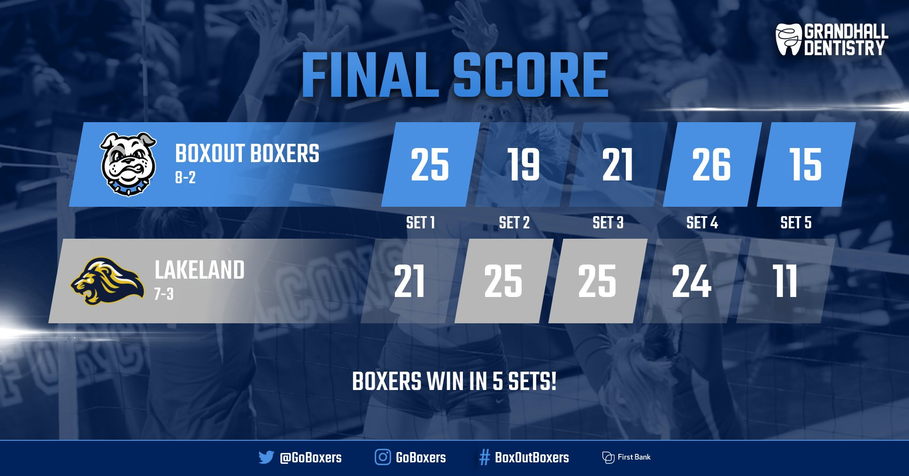
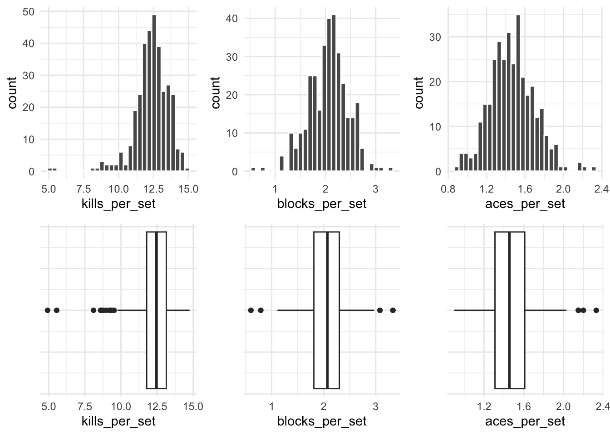
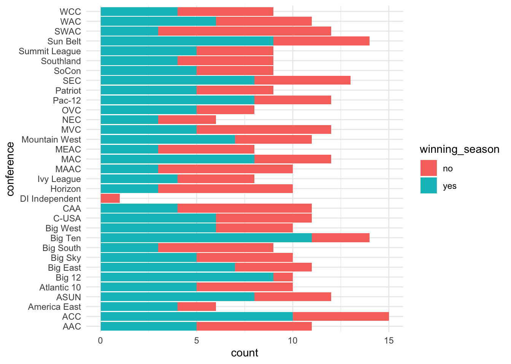
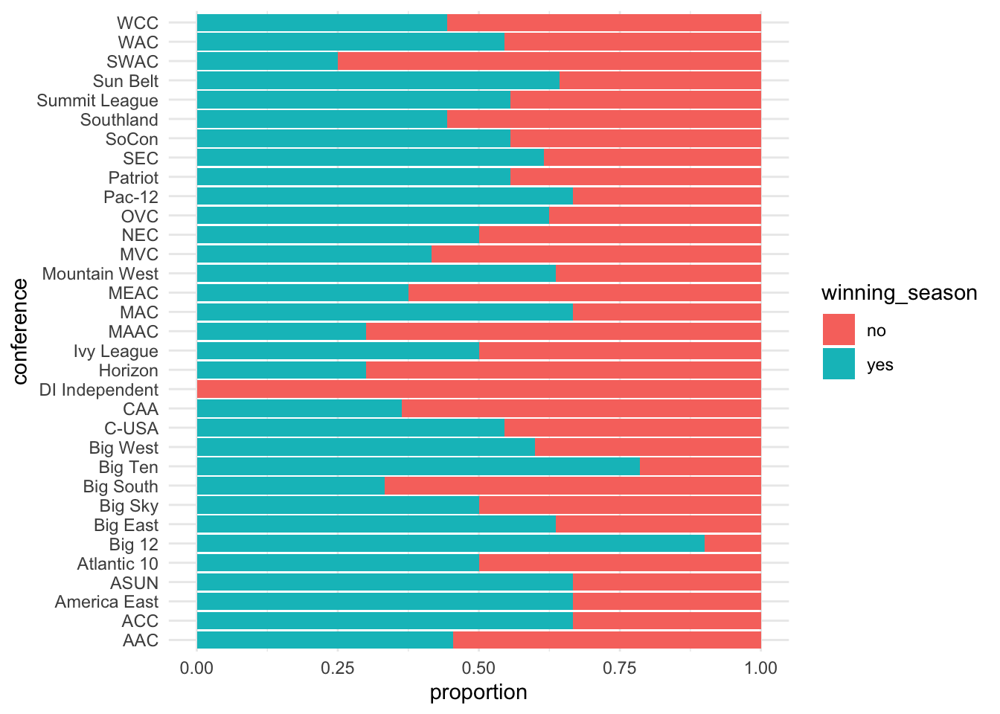
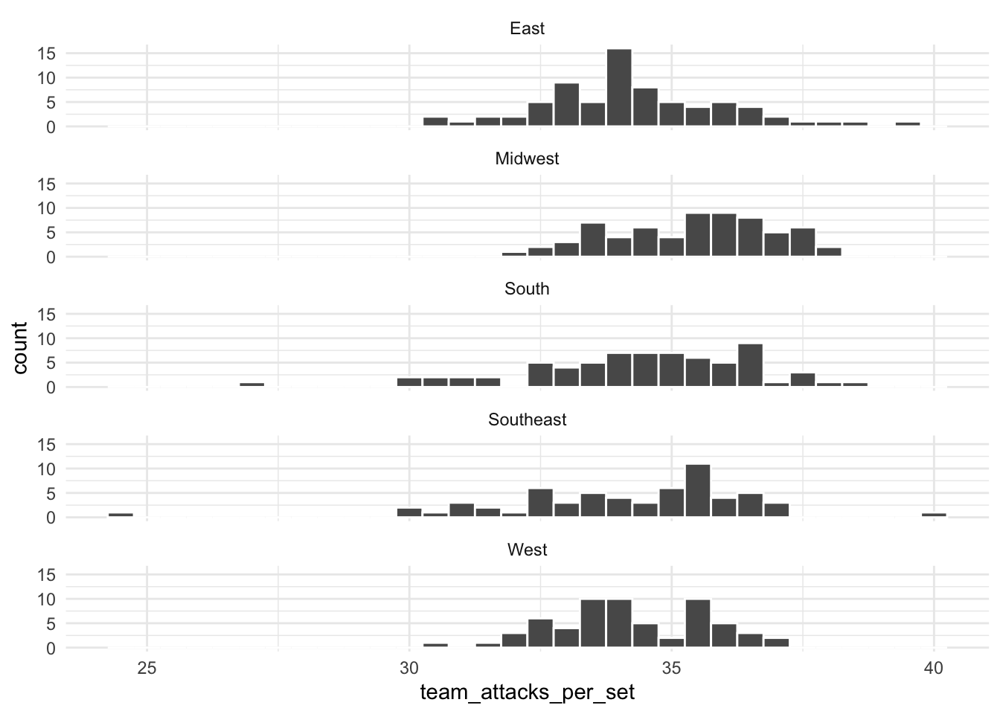
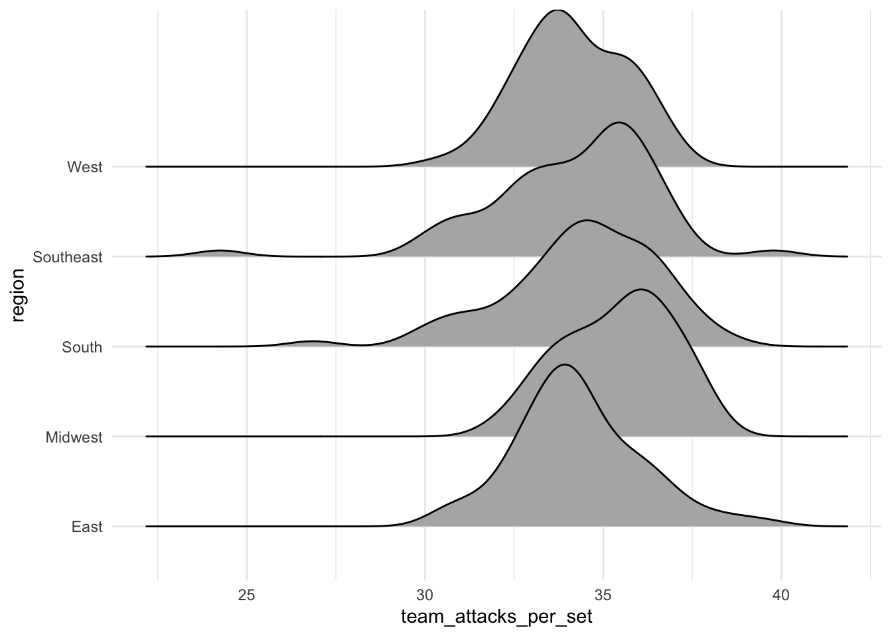
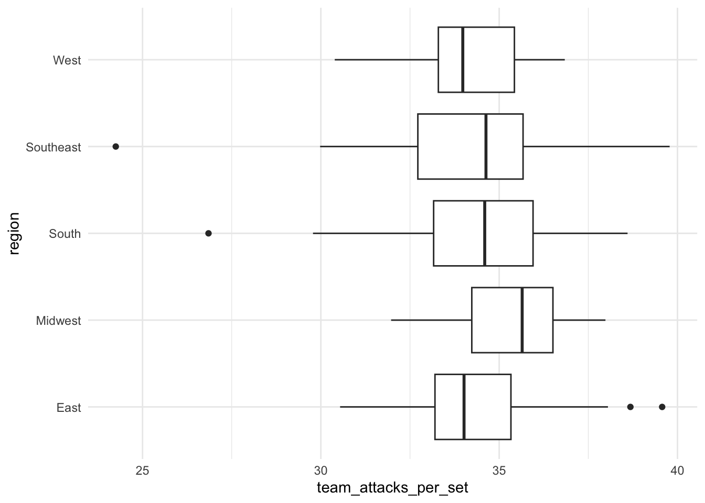
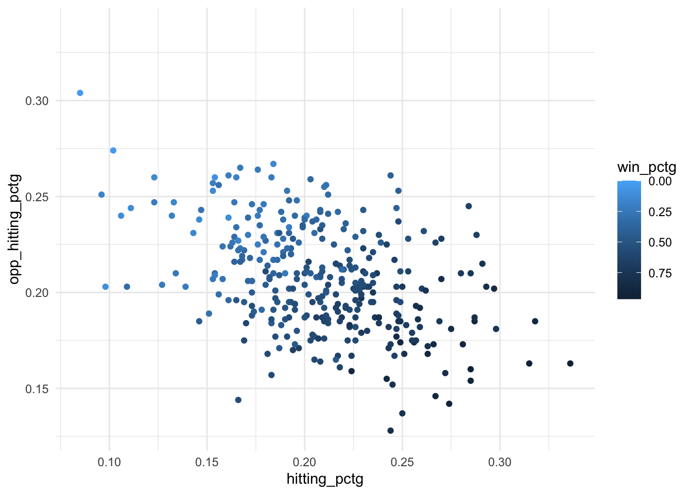
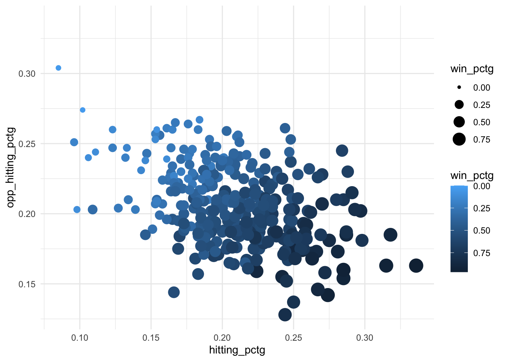

library(tidyverse) #loads package
library(ggridges)
volleyball <- read_csv("volleyball_ncaa_div1_2022_23_clean.csv") #loads dataVolleyball - Women’s NCAA Division I
Variable types
ggplot basics
Exploratory Data Analysis (EDA)
Histograms
Bar plots (simple & stacked)
Scatterplots
Ridge plots
Boxplots
Exploring volleyball statistics through visualization
Introduction
In this module, you will be analyzing data from the NCAA Division I Women’s Volleyball season in 2022-3. The goal of this module is to help you explore data through visualization and to deepen your understanding of variable types (e.g. categorical, numerical). Data comes in many different forms, and an important part of being a good analyst is knowing what visualizations and analyses are appropriate and will provide insight into the data you have.
This data was originally curated by Jack Fay, A.J. Dykstra, and Ivan Ramler.
NOTE: R is the name of the programming language itself and RStudio is a convenient interface. To throw even more lingo in, you may be accessing RStudio through a web-based version called Posit Cloud. But R is the programming language you are learning :)
Getting started: Volleyball data
The first step to any analysis in R is to load necessary packages and data.
You can think of packages like apps on your phone; they extend the functionality and give you access to many more features beyond what comes in the “base package”.
Running the following code will load the tidyverse and ggridges packages and the volleyball data we will be using in this lab.
TIP: As you follow along in the lab, you should run each corresponding code chunk in your .qmd document. To “Run” a code chunk, you can press the green “Play” button in the top right corner of the code chunk in your .qmd. You can also place your cursor anywhere in the line(s) of code you want to run and press “command + return” (Mac) or “Ctrl + Enter” (Windows).
TIP: Using a hashtag in R allows you to add comments to your code (in plain English). Data scientists often use comments to explain what each piece of the code is doing.
We can use the glimpse() function to get a quick look (errr.. glimpse) at our volleyball data. The glimpse code provides the number of observations (Rows) and the number of variables (Columns) in the dataset. The “Rows” and “Columns” are referred to as the dimensions of the dataset. It also shows us the names of the variables (team, conference, …, winning_season) and the first few observations for each variable (e.g. the first three teams in the dataset are Lafayette, Deleware St., and Yale).
glimpse(volleyball)Rows: 334
Columns: 15
$ team <chr> "Lafayette", "Delaware St.", "Yale", "Coppin St."…
$ conference <chr> "Patriot", "MEAC", "Ivy League", "MEAC", "Atlanti…
$ region <chr> "East", "Southeast", "East", "Southeast", "East",…
$ aces_per_set <dbl> 2.33, 2.20, 2.15, 2.15, 2.03, 1.98, 1.93, 1.91, 1…
$ assists_per_set <dbl> 11.01, 11.45, 12.60, 10.56, 11.61, 11.46, 12.26, …
$ team_attacks_per_set <dbl> 34.54, 29.98, 35.39, 32.52, 34.10, 31.53, 37.03, …
$ blocks_per_set <dbl> 1.31, 2.17, 1.82, 1.81, 1.83, 2.39, 1.73, 1.85, 1…
$ digs_per_set <dbl> 13.60, 12.58, 15.29, 14.22, 14.27, 12.59, 15.39, …
$ hitting_pctg <dbl> 0.180, 0.250, 0.242, 0.194, 0.201, 0.226, 0.227, …
$ kills_per_set <dbl> 11.93, 12.12, 13.90, 11.54, 12.40, 12.24, 13.70, …
$ opp_hitting_pctg <dbl> 0.227, 0.137, 0.155, 0.170, 0.188, 0.175, 0.202, …
$ w <dbl> 8, 24, 23, 23, 18, 17, 19, 16, 18, 20, 29, 15, 10…
$ l <dbl> 15, 7, 3, 11, 13, 13, 13, 13, 13, 10, 4, 14, 20, …
$ win_pctg <dbl> 0.348, 0.774, 0.885, 0.676, 0.581, 0.567, 0.594, …
$ winning_season <chr> "no", "yes", "yes", "yes", "yes", "yes", "yes", "…ERROR? Did you get a error message that says could not find function "glimpse"? This means you need to load the tidyverse package. You can do this by running the code library(tidyverse) from the previous code chunk. A shortcut is to hit the “fast-forward” button (next to the “Play” button in your code chunk), which will run all code chunks above your current one.
TIP: Type your answers to each exercise in the .qmd document.
TIP: To distinguish between continuous and discrete, ask yourself “can this variable have decimal values or only whole-numbers?” Read more about variable types here.
Volleyball lingo
Before proceeding with any analysis, let’s make sure we know some volleyball lingo in order to understand what information is contained in each variable (column) in our dataset.
Totally new to volleyball? Watch this 4-minute video: The Rules of Volleyball - EXPLAINED!
Be the first team to win 3 sets to 25 points!!
 Image source: BoxOut Sports
The basics
- To win a volleyball match, your team must be the first to win 3 sets
- A match can consist of 3, 4, or 5 sets (“best 3 out of 5”)
- Your team wins a set if you are the first to score 25 points
- but you have to win by at least 2 points!
- and the 5th match (if necessary) only goes to 15 points
- So how do you score points? By hitting the ball into your opponents side of the court without them successfully returning the ball. (Or by them committing an unforced error such as a missed serve or running into the net, but we won’t worry about that in this analysis).
- Play begins on each point with a serve from the back line and ends when the ball hits the ground.
Variable descriptions
The volleyball data you’ll be analyzing in this lab provides season-level team statistics for 334 teams during the 2022-3 season. Many of the variables are reported as an average “per set.” For example, if a team played 30 matches, this means they played anywhere from 90 to 150 sets during the season, so aces_per_set provides the number of aces they scored, on average, across those 90+ sets. The table below provides detailed descriptions of each variable.
Variable Descriptions
| Variable | Description |
|---|---|
team |
college of the volleyball team |
conference |
conference to which the team belongs |
region |
region to which the team belongs |
aces_per_set |
the average amount of balls served that directly lead to a point (not including errors by the opponent) per set |
assists_per_set |
the average amount of sets, passes, or digs to a teammate that directly result in a kill per set |
team_attacks_per_set |
the average amount of times the ball is sent to the other team’s court from an overhead motion per set |
blocks_per_set |
the average amount of times the ball is blocked from being hit on to the teams side per set |
digs_per_set |
average amount of times the ball is passed by a player successfully after an opponents attack per set |
hitting_pctg |
total team kills minus team hitting errors all divided by total attempts |
kills_per_set |
average amount of hits that directly result in a point per set |
opp_hitting_pctg |
the average hitting percentage of the teams opponent per set |
w |
the amount of team wins for the season |
l |
the amount of team losses for the season |
win_pctg |
the amount of total wins divided by the total matches of the season |
winning_season |
Indication (yes/no) of whether the team won 50% or more of its matches during the season |
Viewing your data
You saw that glimpse() is one way to get a quick look at your data. Often, you’ll want to view your whole dataset. There are two ways to do this:
TIP: Recall that RStudio is split into four quadrants: Source (upper left), Environment (upper right), Console (bottom left), and Files / Plots / Packages / Help / Viewer (bottom right)
- type
View(volleyball)in your Console and then click return/Enter on your keyboard. - OR, in your Environment tab, double click the name of the dataset you want to view.
This will open up your data in a new viewer tab so that you can view it like a spreadsheet (like Google Sheets or Excel*). Once open, you can sort the data by clicking on a column.
*Unlike Google Sheets or Excel, however, you won’t be able to edit the data directly in the spreadsheet.
TIP: When viewing the data, clicking on a column once will sort the data according to that variable in ascending order; clicking twice will sort in descending order.
Creating visualizations
R (and the tidyverse package in particular) has some powerful functions for making visualizations. The type of visualization you should create depends on the type(s) of variable(s) you are exploring. In the remainder of this module, you will explore the volleyball data via visualizations.
One numerical variable
Because kills_per_setis a numeric variable, it is appropriate to visualize it using a histogram. We can create a histogram of number of kills per set with the following code:
ggplot(volleyball, aes(x = kills_per_set)) +
geom_histogram(color = "white")TIP: Your code must refer to datasets and variable names exactly as they appear in your Environment/data. If, for example, we instead had saved the volleyball data as vball and the variable name was Kills_per_set (with a capital K), the first line of plotting code would instead need to be ggplot(vball, aes(x = Kills_per_set)). It’s usually a good idea to open your data in your Environment and/or run glimpse() on your data to verify the exact names.
TIP: When you run the histogram code, you may see the default message: “stat_bin() using bins = 30. Pick better value with binwidth.” This is just a message, not an error. It’s simply informing you that by default ggplot() uses 30 bins when creating a histogram, but you can change this by adding bins = XX inside of geom_histogram(). For example, geom_histogram(bins = 10) will create a histogram with 10 bins. Alternatively, you can specify the width of each bin using binwidth. Try using geom_histogram(binwidth = 1) to see what happens.
For the visualization of kills_per_set above, we might describe and interpret the distribution as follows:
Looking across all NCAA Division I team averages for the 2022 season, we see a unimodal left-skewed distribution of average number of kills per set. A “typical” team averages about 12 kills per set, which is just under half the number of points requried to win a set (25). The vast majority of teams average between 8 and 15 kills per set, but there are a few outlier teams that average as few as 5 kills per set.
We use the term “argument” to refer to the “inputs” to a function.
TIP: Read here for a reminder of terminology and how to describe a distribution in terms of its modality and skewness.
Another common visualization for a numeric variable is a boxplot. The following image shows 3 boxplots and 3 histograms for the variables explored above.

One categorical variable
Let’s use visualization to explore another question:
Because region is a categorical variable, it is appropriate to visualize it using a bar plot.
The general template for creating a simple bar plot is:
ggplot(data, aes(x = variable)) +
geom_bar()Notice it follows the same general format as the histogram code, but now we use geom_bar() instead of geom_histogram() because we are dealing with one categorical instead of one numeric variable.
TIP: In the template code, data and variable are just placeholders. Make sure to replace them with the appropriate dataset and variable names for this analysis.
Two numeric variables
To investigate this question, we need a scatterplot because we are dealing with two numeric variables.
ggplot(volleyball, aes(x = digs_per_set, y = kills_per_set)) +
geom_point()
Notice that the scatterplot code again follows the same general format of a ggplot() layer, with data and aesthetics sepcified inside, and a geom_ layer, this time geom_point(). Because a scatterplot is for two variables instead of one, we must specify two variables, x and y, in the aes() function.
Two categorical variables
Consider our next research question:
Note that this is a question about two categorical variables, conference and winning_season, therefore, a stacked bar plot is appropriate for investigating this question. We can do this using the code below:
ggplot(volleyball, aes(y = conference, fill = winning_season)) +
geom_bar()
ggplot(volleyball, aes(y = conference, fill = winning_season)) +
geom_bar(position = "fill") +
labs(x = "proportion")
One numeric & one categorical variable
Note that now we are interested in comparing a numeric variable (team_attacks_per_set) across groups of a categorical variable (region). To visualize one numeric + one categorical variable, we have a couple options:
faceted histogram
ridge plot
side-by-side boxplot
To create a faceted histogram, we simply add a layer called facet_wrap() to our visualization pipeline for a histogram, which specifies which categorical variable we want to facet by. We use ncol = 1 to specify that we want the histograms to all appear in 1 column (by default it will place them all next to each other in 1 row).
ggplot(volleyball, aes(x = team_attacks_per_set)) +
geom_histogram(color = "white", binwidth = 0.5) +
facet_wrap(~ region, ncol = 1)
To create a ridge plot, we use the following code:
ggplot(volleyball, aes(x = team_attacks_per_set, y = region)) +
geom_density_ridges()
ggplot(volleyball, aes(x = team_attacks_per_set, y = region)) +
geom_boxplot()
More than 2 variables
We can utilize extra aesthetics (in addition to x- and y-axis) such as color, shape, or size to investigate relationships of more than two variables.
ggplot(volleyball, aes(x = hitting_pctg, y = opp_hitting_pctg,
color = win_pctg)) +
geom_point() +
scale_color_gradient(trans = "reverse")
Note: the third layer here scale_color_gradient() is not strictly necessary. It simply reverses the order of the color scale so that larger numbers are darker and smaller numbers are lighter, which tends to align better with viewer’s intuition.
EXTRA: We could add in a 4th or even 5th variable using additional aesthetics such as size or alpha (transparency), but often squeezing too many variables into one visualization makes it cognitively difficult to process and interpret. Alternatively, we may sometimes choose to “double encode” a variable (2 aesthetics for the same variable) to make a relationship in the data more visually salient. But there should be a clear reason for doing so, and you should make sure the extra encoding doesn’t confuse the viewer.
ggplot(volleyball, aes(x = hitting_pctg, y = opp_hitting_pctg,
color = win_pctg, size = win_pctg)) +
geom_point() +
scale_color_gradient(trans = "reverse")
Practice on new research questions
TIP: If the x-axis of your visualization is too cluttered to read all the category labels, try switching the categorical variable to the y-axis instead. You can do this by simply specifying y = variable instead of x = variable inside aes().